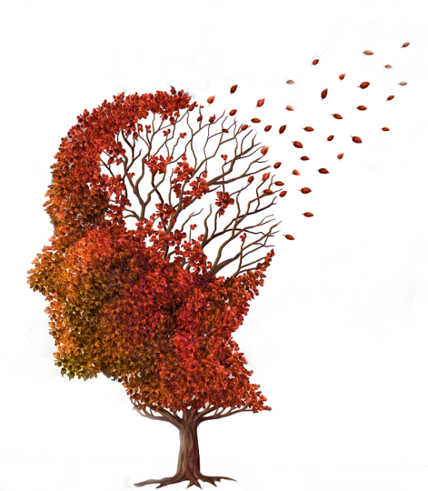

| Causas de Actitudes Agresivas |
|---|
| CAUSA | DESCRIPCIÓN | |
| Transtornos Psicológicos | Los trastornos psicológicos son las causas más comunes del comportamiento agresivo. Si bien cualquiera de estos trastornos puede causar agresión, los más frecuentes son: la depresión, el trastorno bipolar, la esquizofrenia, el trastorno por déficit de la atención con hiperactividad (TDAH), el trastorno límite de la personalidad (TLP) y el trastorno por estrés postraumático (TEPT). |
|  | Estado Físico | Los individuos que tienen antecedentes de migrañas, accidentes cerebrovasculares, epilepsia y diabetes pueden ser propensos a desarrollar comportamientos agresivos. Quienes padecen trastornos del sueño o la enfermedad de Alzheimer también han manifestado agresividad como resultado de sus afecciones. Los trastornos físicos y las enfermedades que carecen de diagnóstico o tratamiento pueden provocar agresividad. En la mayoría de los casos, las acciones y los pensamientos relacionados con la agresividad provocados por trastornos físicos se reducen con el tratamiento apropiado recomendado por un profesional de la salud. |
 | Drogas Ilícitas | El uso de varios tipos de drogas ilícitas pueden inducir a comportamientos agresivos en muchos individuos. Las intoxicaciones con cocaína, anfetaminas, LSD, éxtasis y alcohol a menudo hacen que el usuario se torne extremadamente nervioso y violento. La abstinencia a casi todas las drogas ilícitas, incluida la nicotina, también puede ser un factor que contribuya al comportamiento agresivo. |
| Fármacos Recetados | Los fármacos recetados y las interacciones entre ellos pueden provocar comportamientos agresivos. Un estudio realizado por el científico Kereshmeh Taravosh-Lahn en la Universidad de Texas sostiene que, sorprendentemente, las bajas dosis de antidepresivos que a menudo se prescriben a niños y adolescentes debido a su tamaño, pueden ser responsables de los brotes de agresividad. También se ha demostrado que los esteroides y muchos tranquilizantes provocan agresividad en ciertos individuos. Aquellos que toman una variedad de medicamentos recetados, especialmente si están tratando una enfermedad o trastorno mental, pueden experimentar sentimientos y actos de violencia como una reacción ante la interacción de estos medicamentos. |
| Transtornos del Desarrollo | Suelen ser la causa del comportamiento agresivo, especialmente en niños pequeños. Los adultos que padecen un trastorno del desarrollo que ha pasado desapercibido o aún no tiene diagnóstico, pueden manifestarlo a lo largo de la vida mediante brotes de agresividad o violencia. Las intoxicaciones con plomo, las deficiencias de hierro y hasta incluso algunos contaminantes ambientales han sido identificados como las causas de los impedimentos en el desarrollo en niños que más tarde manifiestan comportamientos agresivos.Los niños que padecen autismo o retrasos mentales graves a menudo experimentan episodios violentos debido a su incapacidad para comunicarse de manera efectiva. |